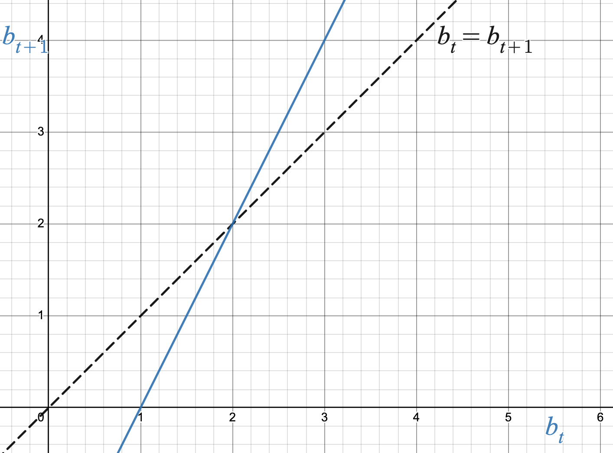
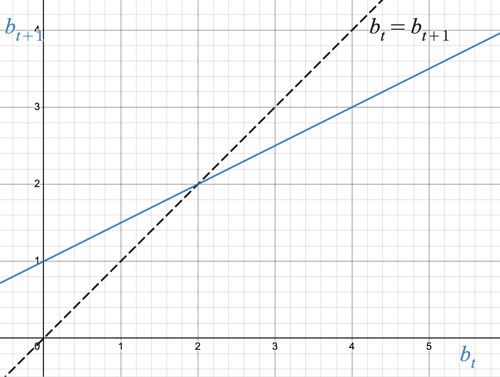
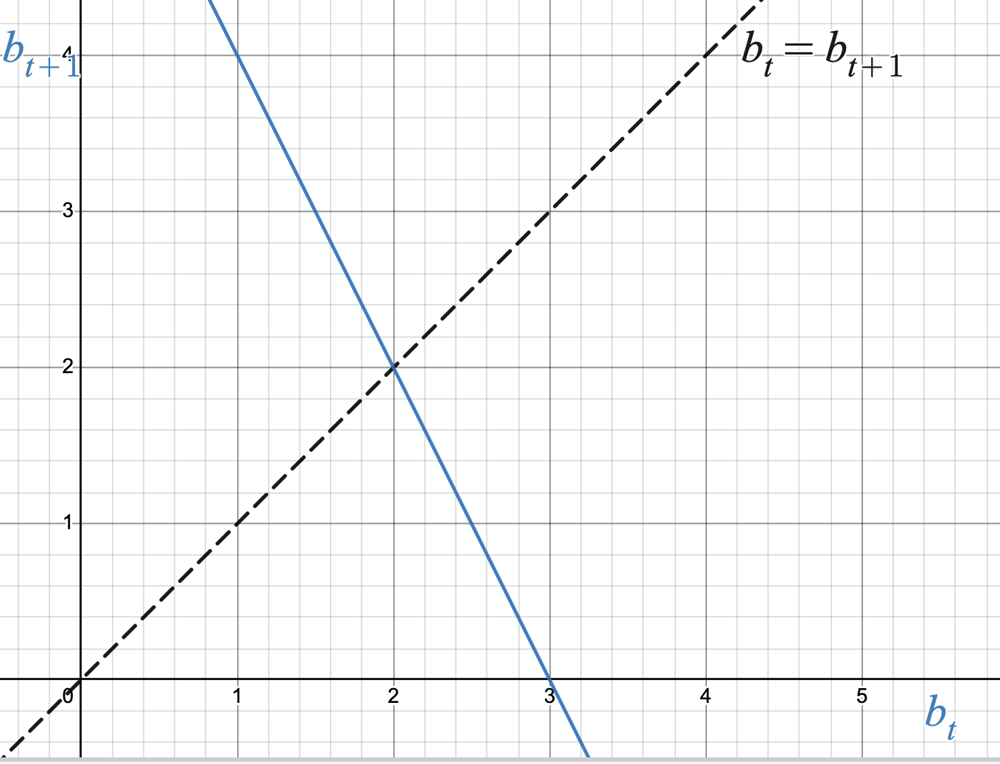
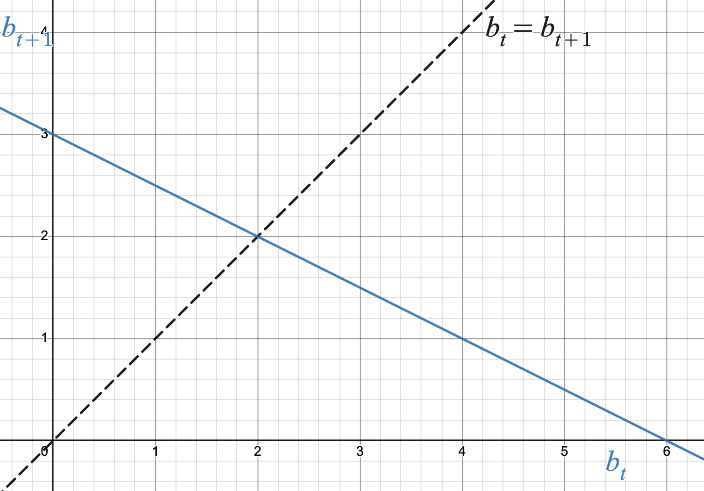

How can we use the first derivative to help classify equilibrium values as stable or unstable?
Can the first derivative always tell us whether an equilibrium value is stable or unstable?
In this section we will revisit an old question from Section 1.8: given a DTDS with equilibrium value \(x^*\text{,}\) is \(x^*\)stable or unstable? Previously we used Cob-webbing to answer this question, which required graphing the updating function rule with the diagonal \(y=x\text{.}\) However, in this section we will see that the derivative is a useful tool that we can use to determine stability with or without the graph of the updating function rule.
Warm-Up3.2.1.
The graph of the updating function rule \(f\) is given below for four different DTDS’s. Each DTDS has an equilibrium value at \(b^* = 2\) (why?). Use cob-webbing to classify the equilibrium value as stable or unstable. What can you say about the derivative of the updating function at the equilibrium value, \(f'(2)\text{?}\)




Subsection3.2.1Testing stability of equilibria using the derivative
Section 3.1 introduced the concept of local linearity: a function whose derivative exists at an input value \(a\) resembles the tangent line at \(a\) for \(x\) values close to \(a\text{.}\) The stability of an equilibrium value is also a local property, since it is dependent on the cob-webbing behavior when using initial values that are close to the equilibrium value. Therefore, even though most updating function rules are not linear functions, when asking about the stability of an equilibrium value we can approximate the updating function rule using its tangent line at the associated equilibrium point. We expect the cob-webbing behavior using the tangent line to be qualitatively the same as if we used the updating function when using initial values that are close to the equilibrium value.
Warm-Up 3.2.1 illustrates some examples of how we expect cob-webbing to behave with linear updating function rules, which is dependent on the slope of the linear updating function rule. We see that the stability of an equilibrium value depends on the steepness of the slope, and not on its direction. Indeed, playing with a few more examples may convince you that the slope of the diagonal line (\(m=1\)) is the right value to compare steepness to in order to determine the stability of an equilibrium value: if the slope of a linear updating function rule is less steep than \(1\text{,}\) the equilibrium value will be stable; if the slope of a linear updating function rule is steeper than \(1\text{,}\) the equilibrium value will be unstable. This observation, along with local linearity, gives us the following stability criteria based on the first derivative:
Let \(f\) be the updating function rule for a DTDS with equilibrium value \(x^*\text{.}\)
If \(|f'(x^*)| \lt 1\text{,}\) then \(x^*\) is a stable equilibrium value.
If \(|f'(x^*)| \gt 1\text{,}\) then \(x^*\) is an unstable equilibrium value.
Remark3.2.1.
We do not compare the actual value of the derivative at the equilibrium value to \(1\text{,}\) but the absolute value of the derivative at the equilibrium value. This reflects our observation that it is only the steepness of the line that impacts the stability, and not the direction of the line.
The stability criteria given so far does not address the case when \(|f'(x^*)|=1\text{.}\) We will address this case in Subsection 3.2.2.
While the direction of the tangent line (the sign of the slope) does not impact stability, it does tell us about other qualitative behavior of the solution function. You may notice in the examples of Warm-Up 3.2.1 that the cob-webbing associated with the negative-sloped updating functions looks different than that of the positive-sloped updating functions. We explore this difference in more detail in the following example.
Example3.2.2.Derivative Signs and Solution Behavior.
In Warm-Up 3.2.1 number 1, the updating function is \(b_{t+1}= 2b_t -2\text{.}\) Using an initial value of \(b_0=2.5\) and iterating the updating function produces the following table of values:
Table3.2.3.
\(t\)
\(b_t\)
\(b_{t+1}\)
\(0\)
\(2.5\)
\(3\)
\(1\)
\(3\)
\(4\)
\(2\)
\(4\)
\(6\)
\(3\)
\(6\)
\(10\)
The table shows that the solution function values are trending away from \(b^*=2\text{,}\) which is unstable behavior. This is because the updating function rule is \(f(x)=2x-2\text{,}\) which means \(f'(x)=2\text{.}\) Using the stability criteria, we see that \(|f'(2)| = |2| = 2\text{,}\) which is greater than \(1\text{,}\) and so the equilibrium value \(b^*=2\) is unstable.
Further, we see the solution function is moving in one direction (increasing in this case) with each iteration. This is because \(f'(2) \gt 0\text{.}\)
In Warm-Up 3.2.1 number 4, the updating function is \(b_{t+1}= -0.5b_t +3\text{.}\) Using an initial value of \(b_0=2.5\) and iterating the updating function produces the following table of values:
Table3.2.4.
\(t\)
\(b_t\)
\(b_{t+1}\)
\(0\)
\(2.5\)
\(1.75\)
\(1\)
\(1.75\)
\(2.125\)
\(2\)
\(2.125\)
\(1.9375\)
\(3\)
\(1.9375\)
\(2.03125\)
The table shows that the solution function values are trending towards \(b^*=2\text{,}\) which is stable behavior. This is because the updating function rule is \(f(x)=-0.5x+3\text{,}\) which means \(f'(x)=-0.5\text{.}\) Using the stability criteria, we see that \(|f'(2)| = |-0.5| = 0.5\text{,}\) which is less than \(1\text{,}\) and so the equilibrium value \(b^*=2\) is stable.
Further, we see the solution function is going back and forth between above and below the equilibrium value of \(2\) with each iteration. This is because \(f'(2) \lt 0\text{.}\)
The qualitative behavior of a solution going back and forth between above and below the equilibrium value is called oscillation, and we’ve seen that the first derivative of an updating function rule can also help us determine when solution functions will oscillate around an equilibrium value.
Oscillation Criteria.
Let \(f\) be the updating function rule for a DTDS with equilibrium value \(x^*\text{.}\) If \(f'(x^*) \lt 0\text{,}\) then the solution function will oscillate around \(x^*\) when the initial value is close to \(x^*\text{.}\)
It’s important to note that the behaviors of “stability” and “oscillation” are not mutually exclusive. That is, it is possible for an equilibrium value to be stable with oscillatory behavior, unstable with oscillatory behavior, stable with non-oscillatory behavior, and unstable with non-oscillatory behavior.
Activity3.2.2.
Consider a DTDS with updating function \(b_{t+1}=b_t(b_t -4)\text{.}\)
Verify that \(b^*=0\) and \(b^*=5\) are equilibrium values of this system.
Use the stability criteria to classify each equilibrium value as stable or unstable.
For which equilibrium value(s), if any, will a solution function display oscillatory behavior for initial values that are close to that equilibrium value?
Use technology to graph the updating function rule. Apply the stability criteria using your graph to classify each equilibrium value as stable or unstable. Do your answers match what you found in part (b)?
Use your graph and cob-webbing to confirm all of your previous answers.
Consider a DTDS with updating function \(p_{t+1}=\dfrac{2p_t}{p_t+1}\text{.}\)
Verify that \(p^*=0\) and \(p^*=1\) are equilibrium values of this system.
Use the stability criteria to classify each equilibrium value as stable or unstable.
For which equilibrium value(s), if any, will a solution function display oscillatory behavior for initial values that are close to that equilibrium value?
Use technology to graph the updating function rule. Apply the stability criteria using your graph to classify each equilibrium value as stable or unstable. Do your answers match what you found in part (b)?
Use your graph and cob-webbing to confirm all of your previous answers.
Subsection3.2.2An inconclusive case using the derivative
The stability criteria provided so far does not tell us what happens when the derivative of an updating function rule at an equilibrium value is equal to \(1\) in absolute value. For the sake of examples, we will focus on the case when the derivative is equal to \(1\) (a similar discussion can be had when the derivative is equal to \(-1\)).
This is an interesting case because if a DTDS has an equilibrium value \(x^*\text{,}\) then the graph of the updating function rule will intersect the diagonal line \(x_{t+1}=x_t\) at the point \((x^*,x^*)\text{.}\) If the derivative of the updating function rule at \(x^*\) is equal to \(1\text{,}\) its tangent line has the same slope as the diagonal line. This means the tangent line intersects the diagonal line and has the same slope, which means the diagonal line is the tangent line to the updating function rule at the equilibrium point. We have seen in Section 3.1 that the way a function behaves around its tangent line at a point can vary depending on the second derivative at that point. We will use this as motivation in generating the two examples below.
First consider the updating function \(x_{t+1}= \sin(x_t)\text{.}\) It can be verified algebraically that \(x^*=0\) is an equilibrium value. Note also that the updating function rule is \(f(x)=\sin(x)\text{,}\) so that \(f'(x)=\cos(x)\text{.}\) Therefore, \(f'(0)= \cos(0) = 1\text{,}\) which means this is a case in which the derivative of the updating function rule at the equilibrium value is equal to \(1\text{.}\) Use the interactive below to answer the questions before viewing the answers.
For initial values close to and greater than the equilibrium value, how does the solution function behave? Answer.
For initial values greater than \(0\text{,}\) cob-webbing shows that the solution function decreases towards \(0\text{.}\)
For initial values close to and less than the equilibrium value, how does the solution function behave? Answer.
For initial values less than \(0\text{,}\) cob-webbing shows that the solution function increases towards \(0\text{.}\)
Would you classify the equilibrium value as stable or unstable? Answer.
Since the solution function values get closer and closer to the equilibrium value for initial values on either side of the equilibrium value, we would classify the equilibrium value as stable.
Because of this example, we may be tempted to conclude that when the derivative of an updating function rule at an equilibrium value is equal to \(1\text{,}\) the equilibrium value is stable. A single example, however, cannot prove to us that this will always occur. The next example will show us that we can, in fact, get different behavior if we change the second derivative value of the updating function at the equilibrium value.
Now we consider the updating function \(x_{t+1}=0.5(x_t)^2 + 0.5\text{.}\) It can be verified algebraically that \(x^*=1\) is an equilibrium value. Note also that the updating function rule is \(f(x)=0.5x^2 +0.5\text{,}\) so that \(f'(x)=x\text{.}\) Therefore, \(f'(1)=1\text{,}\) which means this is a case in which the derivative of the updating function rule at the equilibrium value is equal to \(1\text{.}\) Use the interactive below to answer the questions before viewing the answers.
For initial values close to and greater than the equilibrium value, how does the solution function behave? Answer.
For initial values greater than \(1\text{,}\) cob-webbing shows that the solution function increases away from \(1\text{.}\)
For initial values close to and less than the equilibrium value, how does the solution function behave? Answer.
For initial values less than \(1\text{,}\) cob-webbing shows that the solution function increases towards \(1\text{.}\)
Would you classify the equilibrium value as stable or unstable? Answer.
This is a case we have not seen yet. The behavior is different depending on which side of the equilibrium value the initial value is on. Since the solution function values do not approach the equilibrium value for initial values on both sides of the equilibrium value, we would classify this equilibrium value as having a special case of unstable behavior.
While we technically classify the last example as unstable behavior, we can be more descriptive by calling it half-stable, since it displays stable behavior on one side of the equilibrium value and unstable behavior on the other side.
We have found two examples that both have updating functions rules whose derivative is equal to \(1\) at the equilibrium value, but they display very different behaviors in terms of stability. This means that in this particular case, the first derivative of the updating function does not hold enough information to tell us whether the equilibrium value is stable or unstable. In this case, we must use another method (like cob-webbing, or generating an appropriate table of values) to determine stability. We end this section by stating the stability criteria given earlier along with the inconclusive case in what we will call the Stability Theorem:
Stability Theorem.
Let \(f\) be the updating function rule for a DTDS with equilibrium value \(x^*\text{.}\)
If \(|f'(x^*)| \lt 1\text{,}\) then \(x^*\) is a stable equilibrium value.
If \(|f'(x^*)| \gt 1\text{,}\) then \(x^*\) is an unstable equilibrium value.
If \(|f'(x^*)| = 1\text{,}\) then the stability theorem is inconclusive. Another method must be used to determine the stability of \(x^*\text{.}\)
Subsection3.2.3Summary
Question3.2.5.
How can we use the first derivative to help classify equilibrium values as stable or unstable?
Answer.
Due to local linearity of differentiable functions, the cob-webbing behavior for initial values near an equilibrium value can be analyzed by understanding the cob-webbing behavior of linear updating functions. This results in the following stability criteria for an updating function rule \(f(x)\) and an equilibrium value \(x^*\text{:}\)
If \(|f'(x^*)| \lt 1\text{,}\) then \(x^*\) is a stable equilibrium value.
If \(|f'(x^*)| \gt 1\text{,}\) then \(x^*\) is an unstable equilibrium value.
Though the sign of the derivative does not impact stability, it can tell us whether a solution function will oscillate around its equilibrium value. Oscillation around \(x^*\) occurs when \(f'(x^*) \lt 0\text{.}\)
Question3.2.6.
Can the first derivative always tell us whether an equilibrium value is stable or unstable?
Answer.
No. If \(|f'(x^*)| = 1\text{,}\) then the stability theorem is inconclusive. Another method must be used to determine the stability of \(x^*\text{.}\)
Exercises3.2.4Exercises
1.
Draw a graph of an updating function with an equilibrium value at \(x^*=1\) such that
\(x^*=1\) is stable and non-oscillatory
\(x^*=1\) is unstable and non-oscillatory
\(x^*=1\) is stable and oscillatory
\(x^*=1\) is unstable and oscillatory
2.
Let \(f(x)\) be an updating function rule for a DTDS that has an equilibrium value at \(x^*=2\) such that \(f'(2)= 1\text{.}\)
Draw a graph of an updating function that satisfies the above criteria such that \(x^*=2\) is an unstable (not half-stable) equilibrium value. Illustrate why your example works.
Draw a graph of an updating function that satisfies the above criteria such that \(x^*=2\) is unstable for initial values less than \(2\) but stable for initial values greater than \(2\text{.}\) Illustrate why your example works.
3.
For each updating function below, identify all equilibrium values. Then classify each equilibrium value as stable or unstable. You should justify your answers using the Stability Theorem.